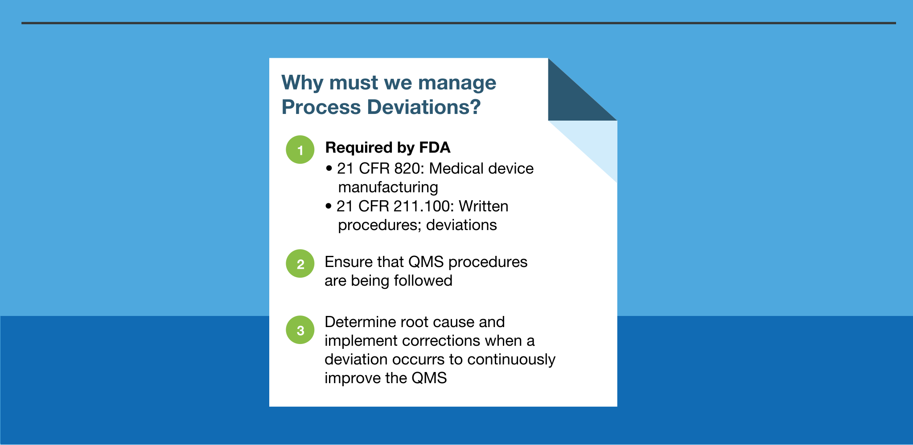
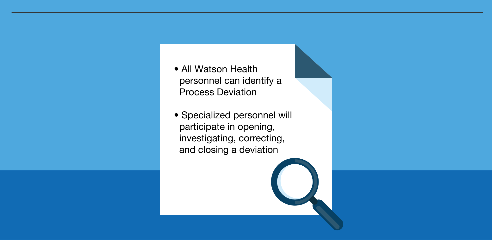
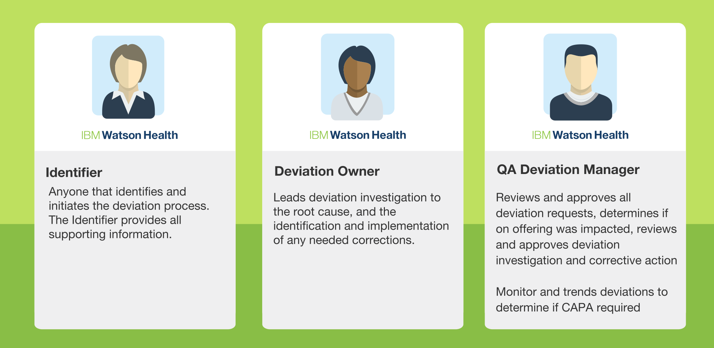
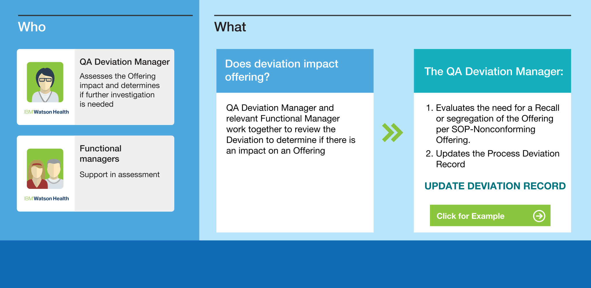
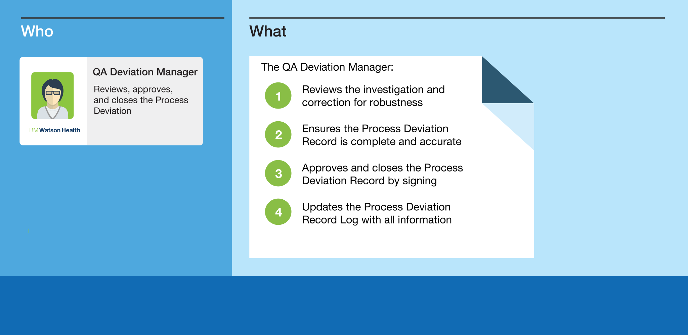
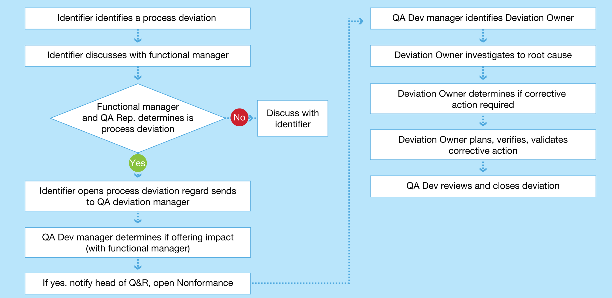
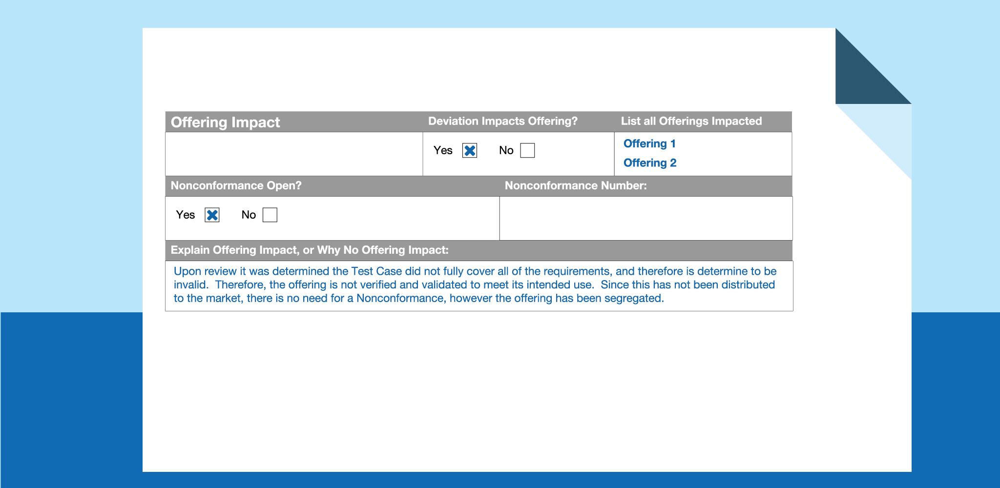

Training Module |
Process Deviation Management
Introduction
1. Identification of process deviations
2. Open process deviation
3. Assess impact
4. Investigate and Correct Deviation
5. Close deviation
Introduction
What is a process deviation?

What is a process deviation?
Scope

Critical Roles

Flow of process deviation
Identification of process deviations
QUIZ 1
Select all that are considered a deviation
A. A design protocol is not signed prior to execution
B. A complaint report is not opened for a complaint
C. An offering fails a test specification
D. All the above!
Open process deviation
QUIZ 2
Once a deviation is approved by the manager and QA, what does the identifier do?
A. Send an email to QA deviation owner
B. Nothing, the manager will handle it
C. Opens a complaint record by completing the deviation description and forwards it to QA deviation manager
D. Holds a training with all team members to explain the issue
Assess impact

Investigate and Correct Deviation
Close deviation

Summary of process flow

QUIZ 3
It is important to track deviations because it is the law and to ensure our QMS continues to improve?
A. True
B. False
QUIZ 4
What information must be recorded on the Deviation Record?
A. Deviation Description
B. Reason why a correction is not needed
C. Description of root cause
D. All of the above
Previous
Next
×
Process Deviation Record

×
Process Deviation Log
×
Root Cause